File: 000760.gt.txt (if the image is defective, simply delete all Arabic text and the line will be excluded)

قالوا : « ربية » من الربا ، و« حبية » من الاحتباء ، وأصلهما ربوة
File: 000761.gt.txt (if the image is defective, simply delete all Arabic text and the line will be excluded)
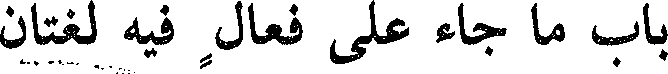
باب ما جاء على فعال فيه لغتان
File: 000762.gt.txt (if the image is defective, simply delete all Arabic text and the line will be excluded)

فعال وفعال
File: 000763.gt.txt (if the image is defective, simply delete all Arabic text and the line will be excluded)

وحبوة .
File: 000764.gt.txt (if the image is defective, simply delete all Arabic text and the line will be excluded)
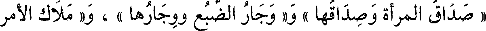
« صداق المرأة وصداقها » ، و« وجار الضبع ووجارها » ، و« ملاك الأمر
File: 000765.gt.txt (if the image is defective, simply delete all Arabic text and the line will be excluded)

وملاكه » و« جهاز العروس وجهازها » ، و« سرار الشهر » وسرار أجود،
File: 000766.gt.txt (if the image is defective, simply delete all Arabic text and the line will be excluded)

و« فكاك الرهن وفكاك » ، و« حجاج العين وحجاج » لعظم (2) الحاجب ،
File: 000767.gt.txt (if the image is defective, simply delete all Arabic text and the line will be excluded)
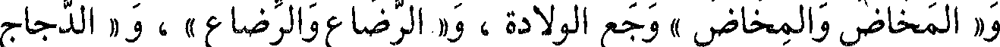
و« المخاض والمخاض » وجع الولادة ، و« الرضاع والرضاع » ، و« الدجاج
File: 000768.gt.txt (if the image is defective, simply delete all Arabic text and the line will be excluded)

والدجاج » وكذلك الواحدة ، و« نعام عين ونعام عين » ، و« طفاف المكوك
File: 000769.gt.txt (if the image is defective, simply delete all Arabic text and the line will be excluded)

وطفاف » ، وهو مثل « جمام المكوك وجمام » و« الوطاء والوطاء »(3)
File: 000770.gt.txt (if the image is defective, simply delete all Arabic text and the line will be excluded)

و« الوثار والوثار » و« الوقاء والوقاء » ، و« بغاث الطير وبغاث » و« الوحام
File: 000771.gt.txt (if the image is defective, simply delete all Arabic text and the line will be excluded)

والوحام » الشهوة على الحمل ، وهو « الدواء والدواء » [569] ، ورجل
File: 000772.gt.txt (if the image is defective, simply delete all Arabic text and the line will be excluded)

قال : ومثله قولهم « رجل نشيان للأخبار » وهو من(1) « نشيت الخبر »
File: 000773.gt.txt (if the image is defective, simply delete all Arabic text and the line will be excluded)

وأصل(2) الياء في نشيت واو (3) ، فقلبت ياء للكسرة ، فقالوا بالياء ليفرقوا
File: 000774.gt.txt (if the image is defective, simply delete all Arabic text and the line will be excluded)

بينه وبين « نشوان » من السكر .
File: 000775.gt.txt (if the image is defective, simply delete all Arabic text and the line will be excluded)

وجمعوا العيد « أعيادا » وأصله الواو ؛ كراهية أن يوافق جمع العود .
File: 000776.gt.txt (if the image is defective, simply delete all Arabic text and the line will be excluded)

قال (4) : وأهل الحجاز يقولون « القصوى » بالواو ، والقياس
File: 000777.gt.txt (if the image is defective, simply delete all Arabic text and the line will be excluded)

« القصيا » بالياء مثل العليا ، وهو من علوت ، والدنيا وهو من دنوت ،
File: 000778.gt.txt (if the image is defective, simply delete all Arabic text and the line will be excluded)
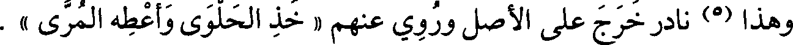
وهذا (5) نادر خرج على الأصل وروي عنهم « خذ الحلوى أعطه المرى » .
File: 000779.gt.txt (if the image is defective, simply delete all Arabic text and the line will be excluded)

وقال الفراء(6) : ومن البلاد « حزوى » بالواو (7) ، ومن الشاذ (8)
File: 000780.gt.txt (if the image is defective, simply delete all Arabic text and the line will be excluded)

قولهم « حل حبيته » [626] وأصلها بالواو، وقد قالوا « حبوته » أيضا؛
File: 000781.gt.txt (if the image is defective, simply delete all Arabic text and the line will be excluded)
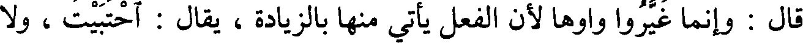
قال : وإنما غيروا واوها لأن الفعل يأتي منها بالزيادة، يقال : احتبيت ، ولا
File: 000782.gt.txt (if the image is defective, simply delete all Arabic text and the line will be excluded)

يقال : حبوت ؛ فلذلك غيرت ، كما قالوا « رجل غديان » بالياء .
File: 000783.gt.txt (if the image is defective, simply delete all Arabic text and the line will be excluded)

قال الفراء : وإنما بنوا « العليا » و « الدنيا » بالياء - وأصلهما الواو -
File: 000784.gt.txt (if the image is defective, simply delete all Arabic text and the line will be excluded)
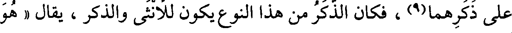
على ذكرهما(9)، فكان الذكر من هذا النوع يكون للأنثى والذكر، يقال « هو
File: 000785.gt.txt (if the image is defective, simply delete all Arabic text and the line will be excluded)
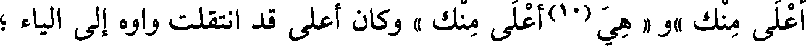
أعلى منك »و « هي(10)أعلى منك » وكان أعلى قد انتقلت واوه إلى الياء ؛
File: 000786.gt.txt (if the image is defective, simply delete all Arabic text and the line will be excluded)

فعلة وفعلة (1)
File: 000787.gt.txt (if the image is defective, simply delete all Arabic text and the line will be excluded)

خطوت « خطوة وخطوة »، وهي « لحمة الثوب ولحمة »(2) .
File: 000788.gt.txt (if the image is defective, simply delete all Arabic text and the line will be excluded)

قال ابن الأعرابي : لحمة النسب والثوب مفتوحان(3) ، ولحمة السبع
File: 000789.gt.txt (if the image is defective, simply delete all Arabic text and the line will be excluded)
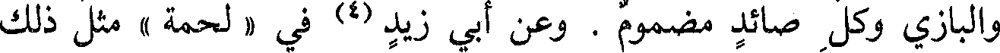
والبازي وكل صائد مضموم . وعن أبي زيد (4) في « لحمة » مثل ذلك
File: 000790.gt.txt (if the image is defective, simply delete all Arabic text and the line will be excluded)

وهي « كفاة الإبل » و « كفاة » وهي أن تفرق فرقتين فيضرب الفحل
File: 000791.gt.txt (if the image is defective, simply delete all Arabic text and the line will be excluded)

سواء .
File: 000792.gt.txt (if the image is defective, simply delete all Arabic text and the line will be excluded)

إحداهما سنة والفرقة الأخرى سنة ، وهي « البلجة والبلجة » ، وهي «الدلجة
File: 000793.gt.txt (if the image is defective, simply delete all Arabic text and the line will be excluded)
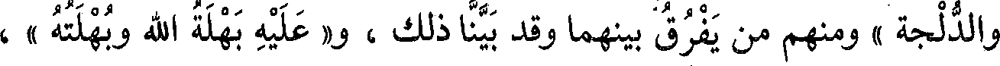
والدلجة » ومنهم من يفرق بينهما وقد بينا ذلك ، و« عليه بهلة الله وبهلته » ،
File: 000794.gt.txt (if the image is defective, simply delete all Arabic text and the line will be excluded)

و« جلست نبذة ونبذة » أي : ناحية ، و« حوبة الرجل وحوبته » أم الرجل ،
File: 000795.gt.txt (if the image is defective, simply delete all Arabic text and the line will be excluded)

و« سدفة من الليل وسدفة » و« حسوة وحسوة » ، و « غرفة وغرفة » و « جرعة
File: 000796.gt.txt (if the image is defective, simply delete all Arabic text and the line will be excluded)
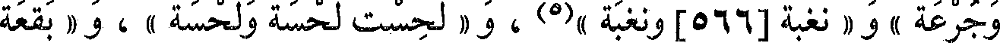
وجرعة » ، و « نغبة[566] ونغبة »(5) ، و « لحست لحسة ولحسة » ، و « بقعة
File: 000797.gt.txt (if the image is defective, simply delete all Arabic text and the line will be excluded)

وبقعة » و « برهة من الدهر وبرهة » ، و« جهمة من الليل وجهمة » وهي(6)
File: 000798.gt.txt (if the image is defective, simply delete all Arabic text and the line will be excluded)
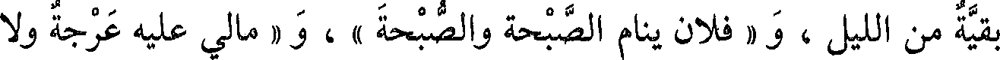
بقية من الليل ، و « فلان ينام الصبحة والصبحة » ، و « مالي عليه عرجة ولا
File: 000799.gt.txt (if the image is defective, simply delete all Arabic text and the line will be excluded)

عرجة » .